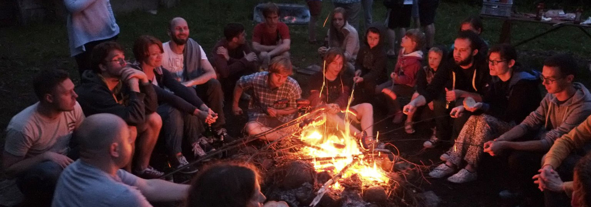

Czy LSG jest obozem kolonijnym?
Nie. Wymagane jest aby niepełnoletni przyjeżdżali pod opieką osoby dorosłej, lub też posiadali pisemną zgodę rodzica na pobyt.
Jaki jest standard domków ile jest w nich miejsc?
Domki traperskie to drewniane budyneczki ocieplone gliną, łóżko to materac (śpiwór należy samemu przywiezć) położony na drewnianej ramie. W domkach jest prąd i światło. Każdy z siedmiu domków składa się z dwóch pokojów, każdy dla 4 osób. Fotki standardu Alaski
Jak z dostępem do ciepłej wody i prądu na polu?
W prysznicach jest ciepła woda rano i wieczorem. Jak da łoś, jest też o innych porach. Prąd jest dostępny w domkach oraz zabudowaniach.
Gdzie można sobie coś ugotować?
Kuchnia dostępna dla obozowiczów jest dobrze wyposażona. Są lodówki, kuchenka, czajnik elektryczny, toster. Za to nie ma naczyń: jeżeli chcecie gotować, warto przywieźć swoje garnki/patelnie/talerze/sztućce/etc. Sklepik obozowy jest dobrze zaopatrzony i można kupić nie tylko zupki chińskie, ale i mąkę, jaja, ziemniaki, konserwy i wiele innych.
Czy moge otrzymać za LSG rozliczenie na potrzeby dofinansowania z zakładu pracy?
Tak. Należy jednak uprzednio sprawdzić w swojej firmie zasady rozliczania a następnie zgłosić się do organizatora przed lub na samej LSG z danymi do faktury.
Czy osoby niegrające w Go mogą przyjechać na LSG?
Tak. LSG oferuje dużo niegoistycznych atrakcji. Dlatego też członkowie rodzin nie grajacy w go na pewno znajdą dla siebie zajęcie.
Czy muszę się rejestrować?
TAK, KONIECZNIE. Organizatorzy bardzo lubią wiedzieć ilu osób się mogą spodziewać – dzieki temu im łatwiej zorganizować atrakcje i budżet.
Czy będzie ognisko?
Tak.
A z kiełbaskami?
